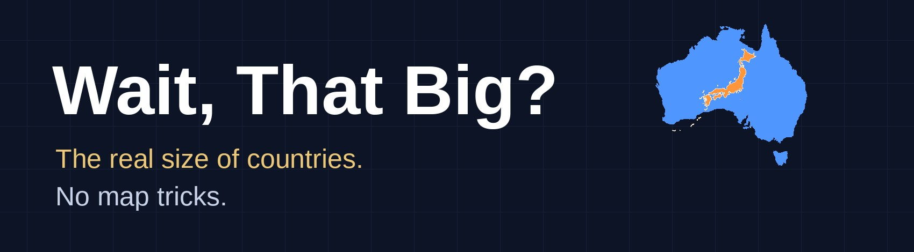

The map on your wall has been lying to you.
Wait, That Big? is a YouTube channel of short map quizzes about the real size of countries. Flat world maps (the Mercator projection) stretch land near the poles, so places like Greenland, Canada and Norway look far bigger than they are. In every video, a country is moved across the globe at its true size and redrawn on the map, so you can see how big it really is.
Watch on YouTube: @wait-that-big
Three kinds of videos
- Which is bigger?Two countries that look about the same on the map. Guess, then watch one move onto the other.
- How many fit?How many Japans fit inside Australia? Guess the number, then watch the shapes fill it up.
- What if…?Move a country somewhere else and see where it would stretch. What if Japan were in Europe?
How it is made
The videos are generated automatically by a small open-source program (github.com/2000Re/wait-that-big). Country shapes come from Natural Earth (public domain), and all areas and distances are calculated on the Earth's surface (the WGS84 ellipsoid), not on the flat map. Narration is generated with Google Cloud Text-to-Speech.